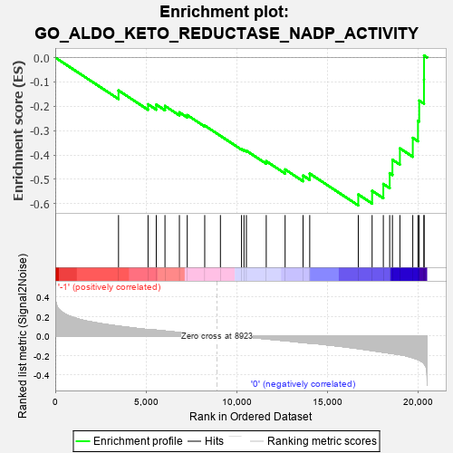
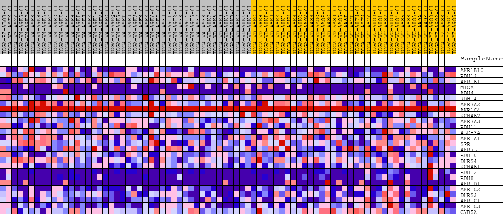
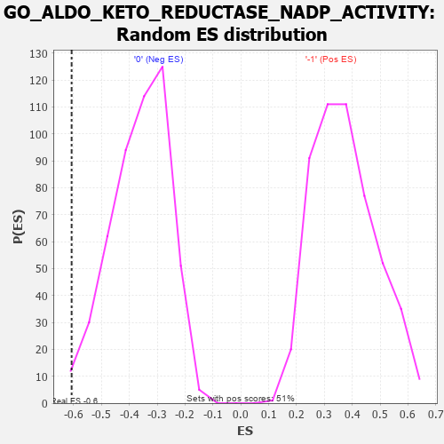

| | | Dataset | GSEAExpression.phenotype_uvm.cls#-1_versus_0 |
| Phenotype | phenotype_uvm.cls#-1_versus_0 |
| Upregulated in class | 0 |
| GeneSet | GO_ALDO_KETO_REDUCTASE_NADP_ACTIVITY |
| Enrichment Score (ES) | -0.6072084 |
| Normalized Enrichment Score (NES) | -1.6782349 |
| Nominal p-value | 0.014198783 |
| FDR q-value | 1.0 |
| FWER p-Value | 0.975 |
Table: GSEA Results Summary

Fig 1: Enrichment plot: GO_ALDO_KETO_REDUCTASE_NADP_ACTIVITY
Profile of the Running ES Score & Positions of GeneSet Members on the Rank Ordered List
| PROBE | DESCRIPTION
(from dataset) | GENE SYMBOL | GENE_TITLE | RANK IN GENE LIST | RANK METRIC SCORE | RUNNING ES | CORE ENRICHMENT | | 1 | AKR1B10 | na | | | 3490 | 0.101 | -0.1352 | No |
| 2 | RDH13 | na | | | 5119 | 0.065 | -0.1919 | No |
| 3 | AKR1B1 | na | | | 5572 | 0.060 | -0.1931 | No |
| 4 | MIOX | na | | | 6053 | 0.051 | -0.1988 | No |
| 5 | ADH4 | na | | | 6849 | 0.036 | -0.2251 | No |
| 6 | RDH14 | na | | | 7282 | 0.028 | -0.2363 | No |
| 7 | AKR7A2 | na | | | 8246 | 0.012 | -0.2793 | No |
| 8 | AKR1C4 | na | | | 9112 | 0.000 | -0.3215 | No |
| 9 | KCNAB2 | na | | | 10276 | -0.006 | -0.3762 | No |
| 10 | AKR7A3 | na | | | 10412 | -0.008 | -0.3799 | No |
| 11 | RDH11 | na | | | 10546 | -0.011 | -0.3827 | No |
| 12 | ALDH3A1 | na | | | 11640 | -0.030 | -0.4256 | No |
| 13 | AKR1A1 | na | | | 12681 | -0.048 | -0.4596 | No |
| 14 | SPR | na | | | 13671 | -0.067 | -0.4845 | No |
| 15 | AKR7L | na | | | 14039 | -0.074 | -0.4765 | No |
| 16 | RDH10 | na | | | 16718 | -0.129 | -0.5622 | Yes |
| 17 | DHRS4 | na | | | 17481 | -0.150 | -0.5473 | Yes |
| 18 | KCNAB1 | na | | | 18100 | -0.167 | -0.5192 | Yes |
| 19 | RDH12 | na | | | 18451 | -0.176 | -0.4749 | Yes |
| 20 | RDH8 | na | | | 18602 | -0.180 | -0.4195 | Yes |
| 21 | AKR1D1 | na | | | 19015 | -0.192 | -0.3728 | Yes |
| 22 | AKR1C2 | na | | | 19725 | -0.223 | -0.3298 | Yes |
| 23 | DHRS3 | na | | | 20012 | -0.241 | -0.2596 | Yes |
| 24 | AKR1C1 | na | | | 20079 | -0.247 | -0.1768 | Yes |
| 25 | AKR1C3 | na | | | 20342 | -0.284 | -0.0906 | Yes |
| 26 | CYB5A | na | | | 20347 | -0.285 | 0.0083 | Yes |
Table: GSEA details [plain text format]

Fig 2: GO_ALDO_KETO_REDUCTASE_NADP_ACTIVITY
Blue-Pink O' Gram in the Space of the Analyzed GeneSet

Fig 3: GO_ALDO_KETO_REDUCTASE_NADP_ACTIVITY: Random ES distribution
Gene set null distribution of ES for GO_ALDO_KETO_REDUCTASE_NADP_ACTIVITY